Sprint 4
1. Monitorització
1.1 Logs
Si ens dirigim a la carpeta /var/log i fem un ls dintre, podrèm veure tot el registre de logs dels arxius que hi han al sistema operatiu.

- Per configurar la rotació dels logs els modiquem l'arxiu de configuració
/etc/logrotate.conf
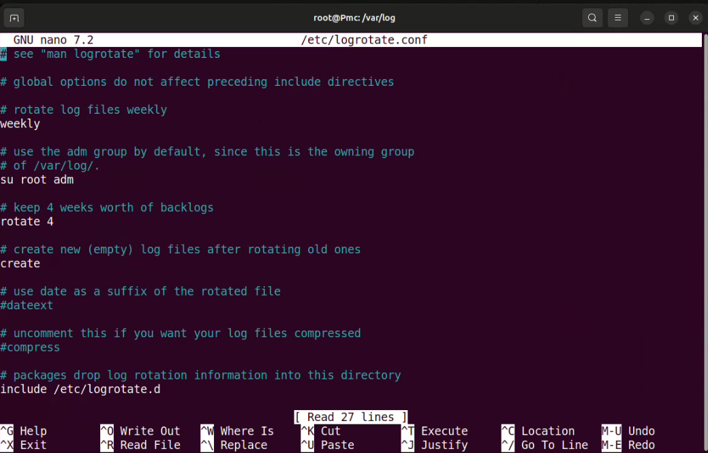
D'altra banda, les configuración específiques es troben dintre del directori /etc/logrotate.d/
cd /etc/logrotate.d/
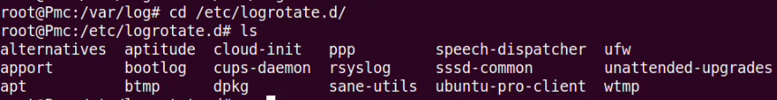
Ara, si entrem a la carpeta /var/log/syslog, estarem veien tot el registre de logs del sistema en temps real.
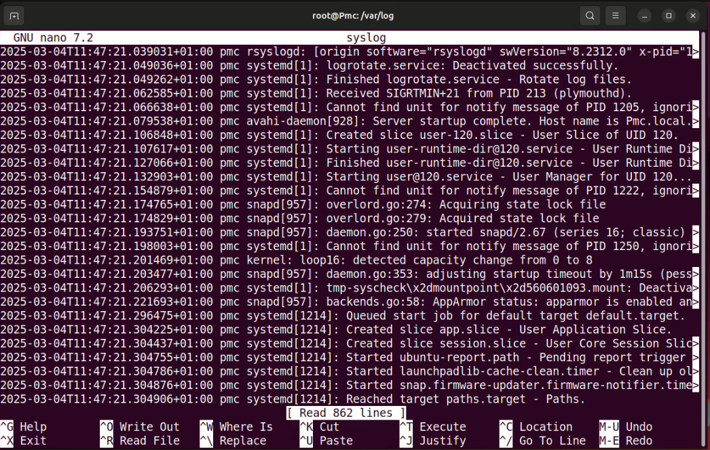
Un altra arxiu de configuració dels logs és el /etc/rsyslog.conf on trobem la configuració de syslog. Dintre d'aqui es defineixen les regles per gestionar els registres d'esdeveniments. Això especifica la prioritat dels missatges i la destinació on s'emmagatzemen, com a fitxers locals o serveis remots.
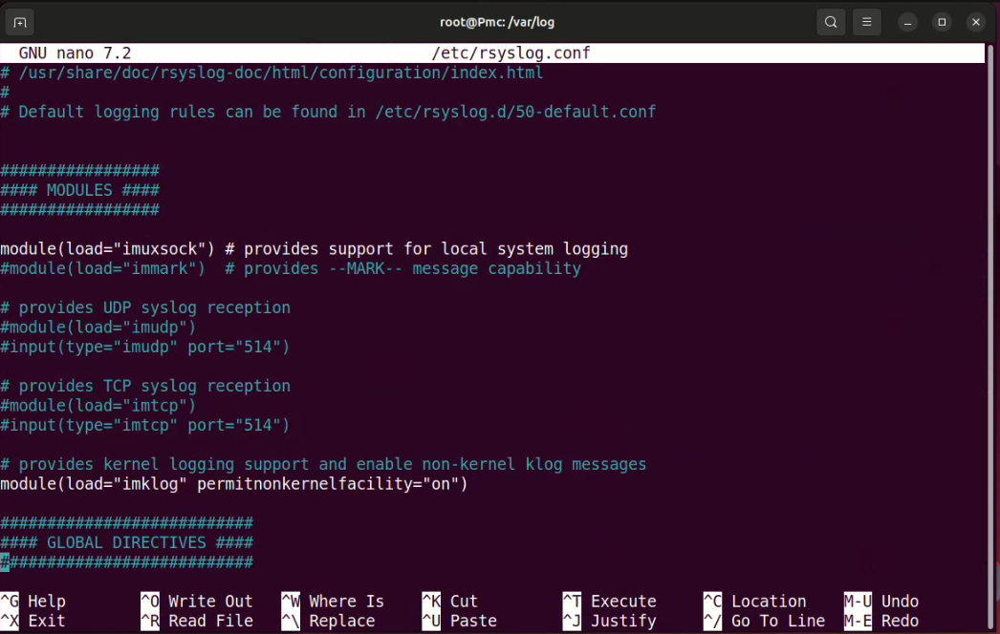
Warning
Cada vegada que es modifica un arxiu .conf per aplicar els canvis s'ha de reiniciar el servei rsyslog amb la comanda:
systemctl restart rsyslog
systemctl status rsyslog
A més a més, trobem està el fitxer /etc/lograte.d/50-default.conf que configura la rotació de logs per a serveis del sistema. Defineix com es gestionen els logs, incloent la freqüència de rotació, la conservació dels logs antics i la compressió.
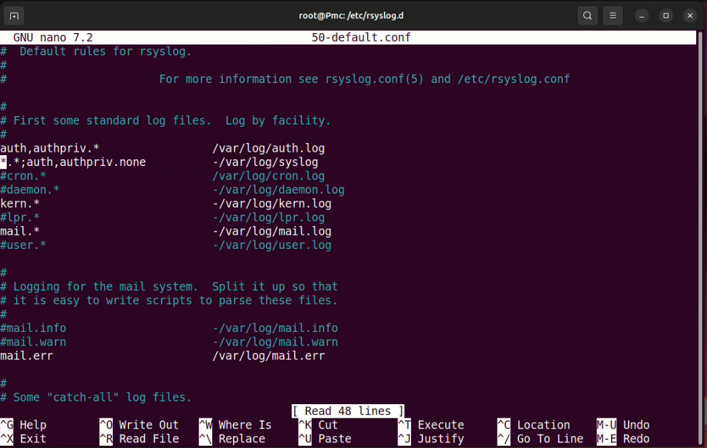
Warning
Cada vegada que es modifica un arxiu .conf per aplicar els canvis s'ha de reiniciar el servei rsyslog amb la comanda:
systemctl restart rsyslog
systemctl status rsyslog
Logs: Journalctl
Per fer proves amb els servei de rsyslog, podem utilizar les comandes tail -f /var/log/syslog per monitoritza i registrar els logs entrant. D'altra banda, amb la comanda logger -i -s -p mail.** "escrivim um missatge " podem enviar registre de prova de forma manual.
tail -f /var/log/syslog
logger -i -s -p mail.err Ha fallat el mail
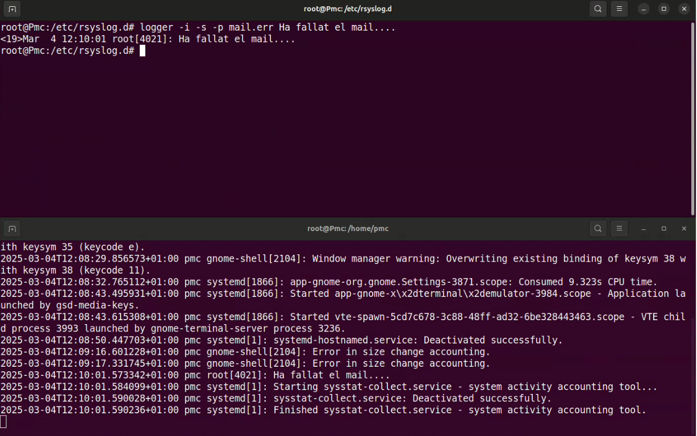
- Per acabar, si volem veure si el nou logger s'ha registrat als logs del sistema correctament, mirem dintre de la carpeta
/var/log/mail.log
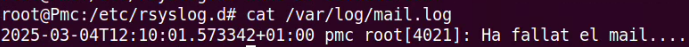
També, podem configurar missatge d'alerta o avisos:
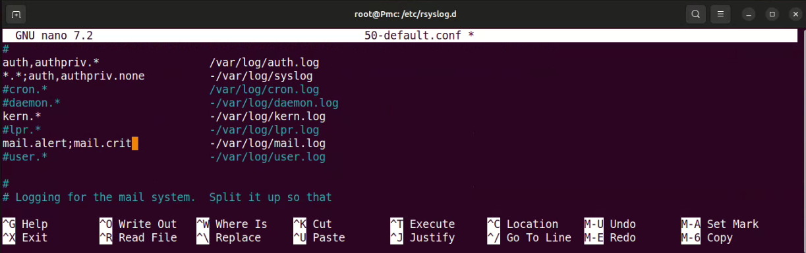
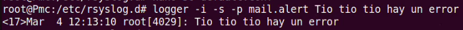
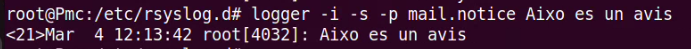
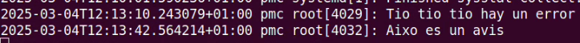
O fins i tot un crit (alerta d'atenció immediata)
*.crit -/var/log/pmc.log
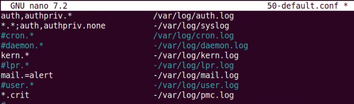
I si l'executem i el veriquem sortirà a la carpeta indicada /var/log/pmc.log en l'arxiu de configuració 50-default.conf.
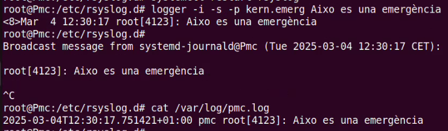
1.1.1 Journalctl
Amb el journalctl podem visualitzar i gestionar els registres del sistema guardats pel sistema de registre systemd. Ens permet consultar els logs del sistema de manera eficient. Els podem filtrar per data, per servei o nivell de severitat, i veure missatges d'error, advertències, etc.
journalctl -p alert
I seguidament amb la comanda journalctl -u cron permet veure els registres del servei cron gestionats per systemd. El paràmetre -u indica que es volen mostrar els logs d'un servei específic. En aquest cas, es mostraran els missatges relacionats amb el servei de cron, que gestiona les tasques programades en el sistema:
journalctl -u cron
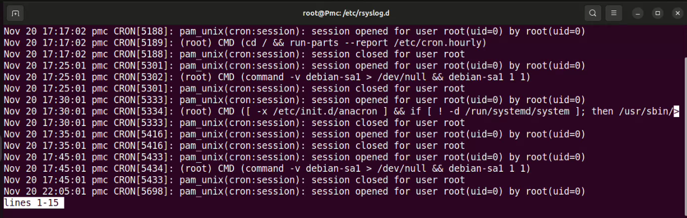
1.2 Filtrar per serveix amb journalctl
1.3 Enviar un log personalitzat via IP al servidor
2. Connexió remota
2.1 Instal·lació i execució
Els passos per descarregar el TeamViewer son els següents:
-
Ves a la pàgina oficial: https://www.teamviewer.com/en/download/linux/
-
Baixa el paquet .deb corresponent a la teva arquitectura (64-bit normalment).
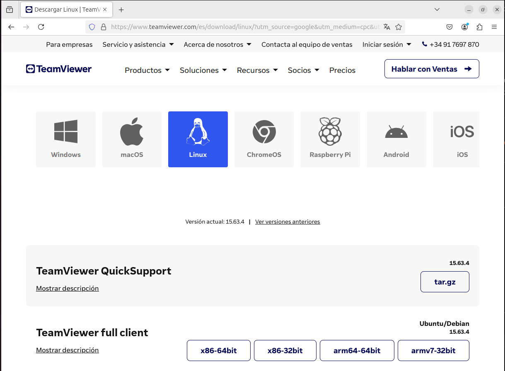
Instal·lar TeamViewer:
- Obre un terminal i ves a la carpeta on has descarregat el fitxer (Downloads per defecte).
cd ~/Downloads sudo dpkg -i teamviewer_amd64.deb sudo apt --fix-broken install # Si hi ha errors de dependències
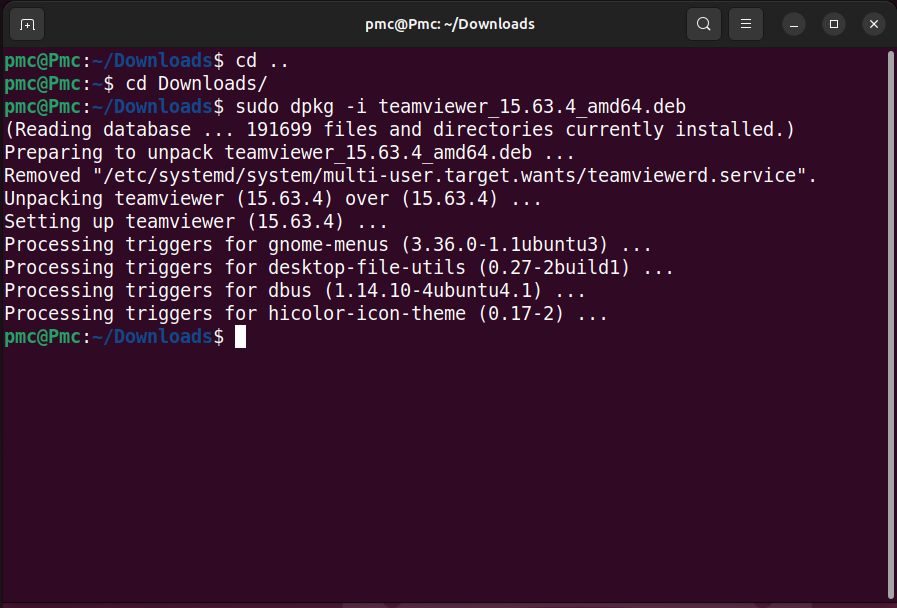
Finalment, per excutar el TeamViewer, executem l'aplicació amb l'icona on escrivim:
teamviewer
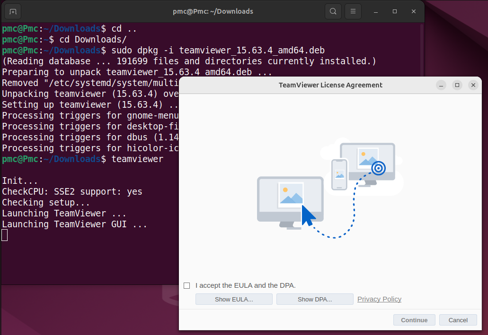
2.2 Configuració del TeamViewer
- Acceptar els termes i condicions en iniciar el programa.
- Obtenir l'ID i la contrasenya generats per TeamViewer.
-
Opcional (si vols accés sense necessitat de contrasenya cada cop):
-
Clica a Extras → Opcions → Control d'accés
- Activa Accés fàcil o Configura una contrasenya personal
En el meus cas, no ho he fet.
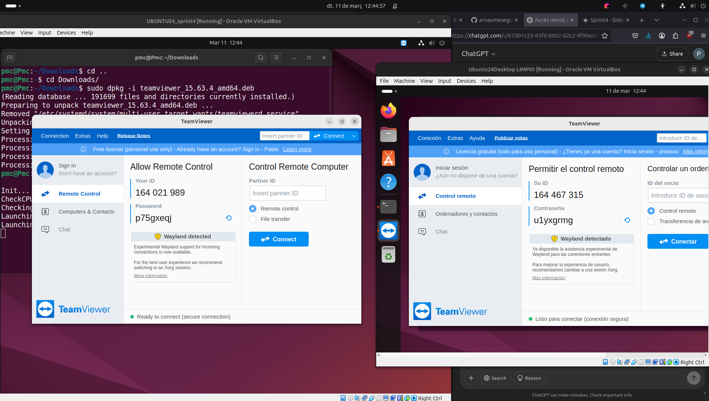
2.3 Connectar-se remotament
Per conncatar-se remotament solament falten uns pocs pasos. Instal·la i obre TeamViewer a l'ordinador des del qual et vols connectar. Despres, introdueix l'ID de l'altre equip a la secció de "Control Remot". Al final, prem "Connectar" i introdueix la contrasenya.
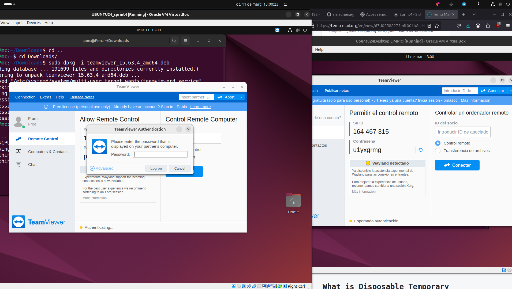
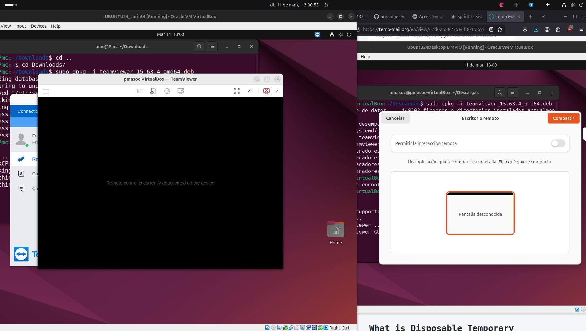
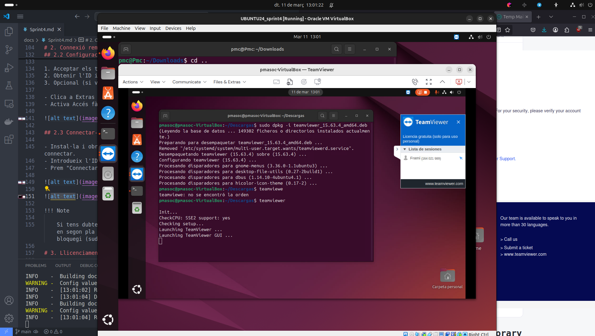
Note
Si tens dubtes o errors, revisa que TeamViewer s'estigui executant en segon pla (teamviewer daemon enable) i que el tallafoc no el bloquegi (sudo ufw allow 5938/tcp).
3. Llicenciament
3.1 Teoría llicenciament
3.1.1 Llicències programari lliure/open source (FOSS)
Aquestes permeten que altres persones usin, modifiquin i redistribueixin el teu codi, amb certes condicions.
-
Copyleft (Obliguen a mantenir la llicència en derivats)
GPL (GNU General Public License): Qualsevol que modifiqui el codi ha de distribuir-lo també amb la mateixa llicència.
AGPL (Affero GPL): Igual que la GPL, però també aplica a serveis web.
LGPL (Lesser GPL): Permet que biblioteques siguin usades en programari privatiu.
-
Permissives (No obliguen a mantenir la llicència en derivats)
MIT: Molt flexible, només exigeix reconeixement a l'autor.
Apache 2.0: Similar a MIT, però protegeix contra patents.
BSD (Berkeley Software Distribution): Similar a MIT, amb algunes variacions.
3.1.2 Llicències programari propietari
Les llicències de programari propietari no permeten modificar ni redistribuir el codi sense permís del creador d'aquest.
-
EULA (End-User License Agreement): Com les que tenen Windows o Adobe.
-
Llicència personalitzada: Pots definir les teves pròpies restriccions.
3.2 Aplicació de la llicència
-
Si vols que sigue completament lliure i obligar a compartir modificacions: GPL
-
Si vols que sigue lliure pero sense restriccions/obligacions per als altres: MIT / Apache
-
Si vols que sigui privativa i restringitada: Llicència personalitzada
Finalment, si ja hem el·legit quina llicència, amb aquins paràmetres volem utilitzar. En dirigim a la pàgina web de chooselicense.com per escollir i afegir el fitxer LICENSE amb el text de la llicència dintre del nostre projecte.
Podem incloure un comentari al codi font amb un avís legal. Exemple de MIT:
# Copyright (c) 2025, [El teu nom o empresa]
# Aquest programari es distribueix sota la llicència MIT.
# Vegeu el fitxer LICENSE per a més informació.
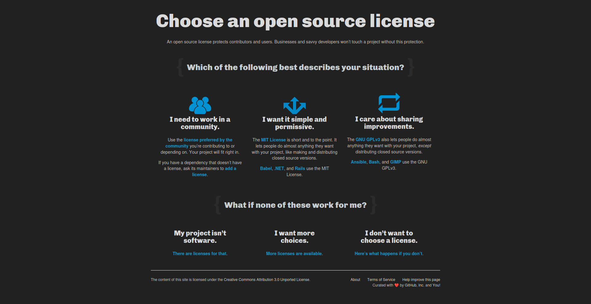
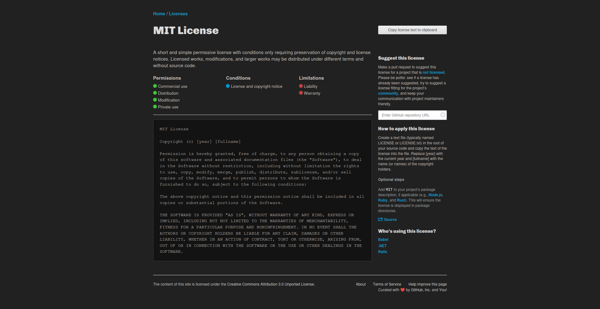
Tip
- Si vols màxima llibertat i compatibilitat: MIT
- Si vols protegir modificacions i forçar que segueixin obertes: GPL
- Si vols protegir patents: Apache 2.0
- Si no vols que ningú modifiqui el codi: Llicència privativa